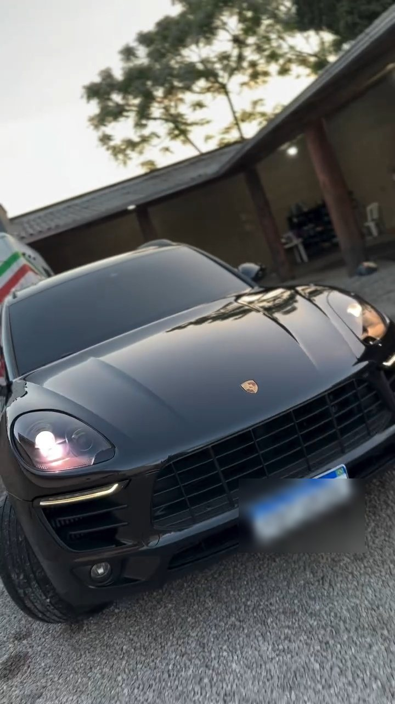
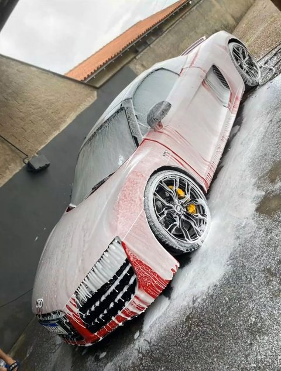
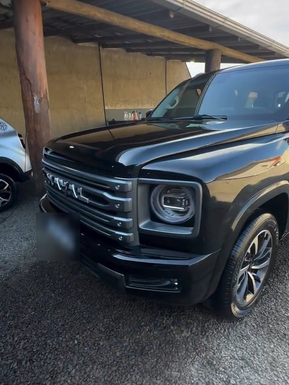
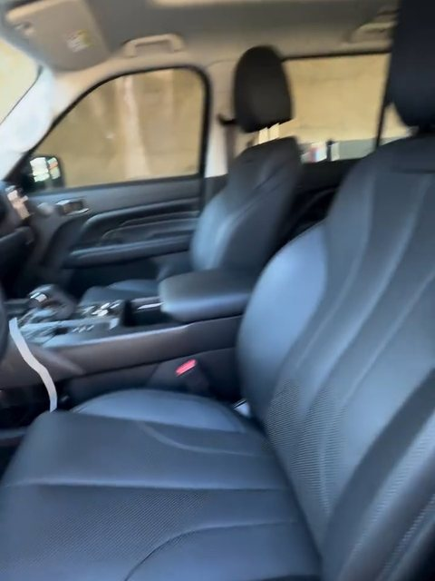
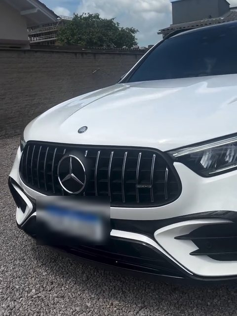
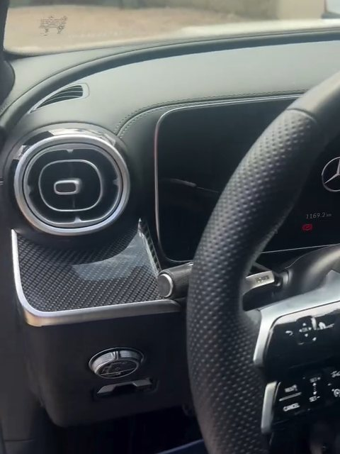
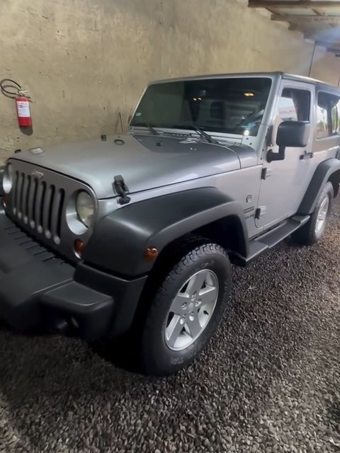
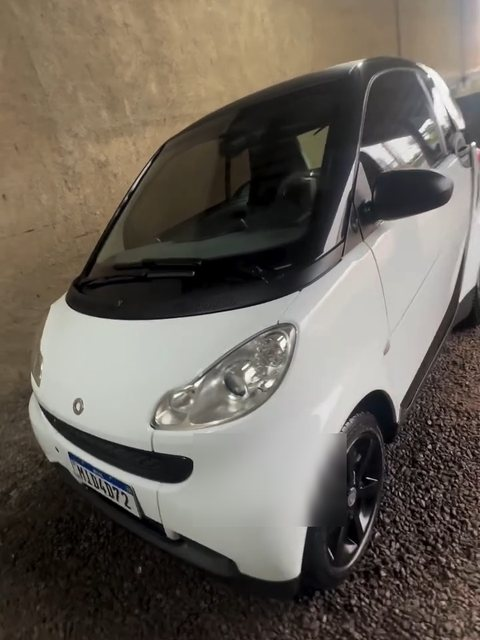
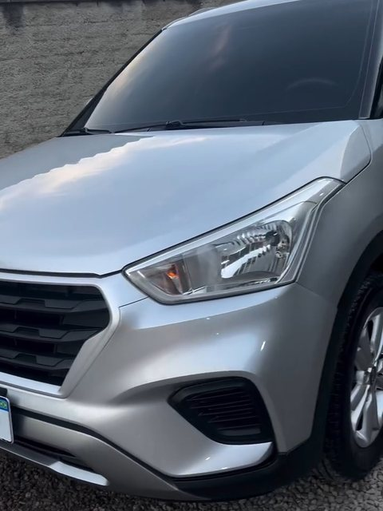

Estética automotiva · Tubarão/SC · 14 anos
Tira a espuma. Fica o brilho.
Lavação personalizada, higienização interna, polimento técnico e vitrificação no Revoredo, pertinho da ponte do Farol Shopping. Orçamento direto no WhatsApp.
- Atendimento
- Seg a sex · 08h–12h · 13h30–18h
- Endereço
- R. Padre Nóbrega, 390 · Revoredo

Antes e depois · do próprio Instagram
“Meu super poder é transformar isso… Nisso.”
Arraste o rodo para comparar. São quadros do mesmo vídeo publicado pela Ncar — antes e depois do serviço, não montagem.
Nossos serviços
Marque o que o seu carro precisa.
A ficha vira uma mensagem pronta no WhatsApp da Ncar. Valor e horário são combinados na conversa.
Passou pelo pátio
Do popular ao importado, o mesmo capricho.

Primeiro, a espumaLavação · reel 
SUV pretoPintura e interior · reel 
Couro limpoInterior do mesmo SUV 
Mercedes-BenzSUV branco · reel 
PainelInterior do Mercedes 
Jeep WranglerPrata · reel 
Smart fortwoBranco · reel 
Hyundai CretaPrata · reel
Empresa de família
“Aqui você não é apenas cliente, faz parte da nossa família.”
Palavras da própria Ncar. Atendimento de confiança, bons produtos e cuidado em cada detalhe — com hora marcada para o seu carro não esperar.
Horário
- Segunda a sexta
- 08:00 – 12:00
- 13:30 – 18:00
Onde fica
R. Padre Nóbrega, 390 · Revoredo
Tubarão/SC — perto da ponte do Farol Shopping, no semáforo.